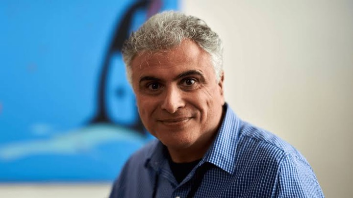

What happened?
How can agents fuse noisy operational signals, reason causally and counterfactually, and localize root causes rather than merely correlate symptoms?
- Grounded diagnosis
- Causal and counterfactual reasoning
- Topology-aware inference
Causal Reasoning, Uncertainty, and Safe Action
A research forum for AI agents that can diagnose operational failures, decide under uncertainty, and use network-automation tools with safeguards.
01 Overview
AI agents operating on live networks must do more than answer questions. They must combine topology, telemetry, logs, alarms, tickets, configuration state, and tool outputs; determine what evidence to gather next; distinguish causes from correlations; and know when to act, request approval, roll back, or escalate.
This workshop brings together foundational AI researchers and practitioners who build and operate real networks. We treat network operations as a concrete scientific testbed, network automation as the enabling capability, and autonomous networking as the longer-term objective.
02 Research questions
We focus on the complete path from heterogeneous operational evidence to a verifiable, governed intervention.
How can agents fuse noisy operational signals, reason causally and counterfactually, and localize root causes rather than merely correlate symptoms?
How should an agent gather additional evidence, select tools and APIs, calibrate uncertainty, and choose between acting, asking, and escalating?
How can network actions be validated, governed, audited, rolled back, and verified under real operational constraints?
Topics of interest
Root-cause localization, intervention analysis, and counterfactual reasoning.
Tool selection, stopping rules, partial observability, and delayed outcomes.
Intent translation, configuration validation, planning, and closed-loop control.
Learning from sparse, heterogeneous, privacy-sensitive operational data and feedback.
Controlled experiments, process-level metrics, reliability testing, and reproducible protocols.
Human approval, governed execution, auditability, rollback, and verification.
03 Invited speakers
Talk titles and biographies will be announced with the program. Affiliations reflect current information provided by the organizers.
Professor of Computer Science and Engineering
Pennsylvania State UniversitySenior Staff Software Engineer · LLM Training
GoogleSenior Staff Research Scientist
Google DeepMindSenior Distinguished Engineer & Chief Architect
NVIDIAPrincipal Machine Learning Engineer
CiscoPrincipal AI Researcher
Cisco04 Program
The final agenda will follow the session and break times assigned by AAAI. Exact talk titles, times, room, and workshop day remain to be announced.
Shared questions, scope, and goals
AI methods, networks, and deployed systems
Orals selected through peer review
Learning, validation, and empirical findings
A structured community research agenda
Hands-on systems and direct interaction
05 Call for participation
We welcome research, work in progress, well-grounded positions, deployed-system experience, and demonstrations.
Contributions should advance reliable, auditable, and controllable agents for network automation and autonomous network operations.
Full papers may be up to 8 pages; short, position, and demo papers may be up to 4 pages. Page limits include references. Use the two-column format in the AAAI-27 Author Kit (ZIP). Submissions will be evaluated for relevance, technical quality, clarity, and potential to stimulate discussion. At least one author of each accepted submission must present in person. The review mode, dual-submission policy, and optional dissemination arrangements will be posted before submissions open.
Authors should create or update their OpenReview profiles well before the deadline. New profiles without an institutional email may require moderation; profiles created with an institutional email are activated automatically.
All presentations must be delivered in person; virtual presentations are not permitted. Registered workshop participants may attend remotely through AAAI-provided facilities.
We expect approximately 40–60 participants. Attendance is open to registered AAAI-27 workshop participants on a first-come, first-served basis, subject to room capacity. See AAAI-27 registration details.
Titles, abstracts, and author lists of accepted submissions will be public on OpenReview. Submission PDFs will remain private unless the organizers later announce and explicitly enable their release. AAAI does not publish workshop papers in the AAAI Digital Library.
06 Organizers
Questions about the workshop may be directed to the workshop chair and main contact.
Senior Research Director, AI Research · Cisco
yuqingga@cisco.comProfessor of Computer Science and Engineering · Pennsylvania State University
tinghe@psu.eduSenior Distinguished Engineer & Chief Architect of AI and Networking · NVIDIA
jvasseur@nvidia.com
07 FAQ
No. The workshop focuses on network operations, network automation, and autonomous networking rather than threat, attack, malware, or defense methods.
No. All presentations must be delivered in person; virtual presentations are not permitted. Registered workshop participants may attend remotely through AAAI-provided facilities.
No. AAAI does not publish workshop papers in the AAAI Digital Library. Titles, abstracts, and author lists of accepted submissions will be public on OpenReview; submission PDFs will remain private unless the organizers later announce and explicitly enable their release.
AAAI-27 workshops run February 22–23, 2027. The exact day and room for this one-day workshop will be posted after AAAI assigns them.